CS184/284A Spring 2025 Homework 3 Write-Up
Link to webpage: https://cal-cs184-student.github.io/hw-webpages-aidenjw/ Link to GitHub repository: https://github.com/cal-cs184-student/hw-webpages-aidenjw

Overview
TODO Give a high-level overview of what you implemented in this homework. Think about what you've built as a whole. Share your thoughts on what interesting things you've learned from completing the homework.Part 1: Ray Generation and Scene Intersection
Ray Generation and Rendering Pipeline
To generate a ray, I mapped each normalized image sample coordinate
(x, y) from the range [0,1] × [0,1] onto the camera’s
sensor plane. Using the horizontal and vertical field of view, I computed the
corresponding position on the canonical sensor plane located one unit in front
of the camera. This produced a direction vector in camera space.
Next, I transformed this direction into world space using the
camera-to-world matrix c2w. After normalizing the direction vector,
I constructed a ray using the camera position pos as the origin.
Finally, I set the ray bounds using the near and far clipping distances
(nClip and fClip). Each pixel sample therefore produces
a ray that travels from the camera through the image plane into the scene.
Once a ray is generated, the renderer tests it against the primitives in the scene. Each primitive provides an intersection routine that determines whether the ray hits that object. If a hit occurs, the intersection record is updated with the hit distance, surface normal, and material information. The closest valid intersection along the ray is used to determine the pixel color.
Triangle Intersection Algorithm
To intersect rays with triangles, I implemented the Möller–Trumbore ray–triangle
intersection algorithm. The algorithm begins by computing two edge vectors of
the triangle. Using cross products and dot products between these edges and the
ray direction, we solve for the ray parameter t and the barycentric
coordinates b1 and b2. These values determine where the
ray intersects the plane of the triangle.
If the barycentric coordinates satisfy
b1 ≥ 0, b2 ≥ 0, and
b1 + b2 ≤ 1, then the intersection lies inside the triangle.
Additionally, the intersection distance t must lie within the
valid ray interval [min_t, max_t]. When all conditions are met,
the intersection is valid. The intersection structure is then updated with the
hit distance and an interpolated surface normal computed from the triangle’s
vertex normals.
For spheres, I solved the quadratic equation obtained by substituting the ray equation into the implicit equation of a sphere. This yields up to two possible intersection distances. I selected the smallest valid intersection within the ray bounds and computed the surface normal using the vector from the sphere center to the hit point.
Normal Shading Results
I rendered several small .dae scenes using normal shading.
|
|

|

|

|
Part 2: Bounding Volume Hierarchy
BVH Construction AlgorithmMy BVH construction algorithm begins by computing a bounding box that encloses all primitives in the current range. If the number of primitives is at most the maximum leaf size, I stop the recursion and create a leaf node containing that subset of primitives. Otherwise, I compute the bounding box of the primitive centroids and choose the axis with the largest extent. This heuristic attempts to split along the direction in which the primitives are most spread out, which usually produces a more balanced tree and tighter child bounding boxes.
After selecting the split axis, I choose the splitting point as the midpoint of the centroid bounding box along that axis. I then partition the primitives based on whether their centroid lies to the left or right of this midpoint and recursively build the left and right child subtrees. If the midpoint split fails to divide the primitives evenly, a median fallback can be used to prevent degenerate recursion. I chose this centroid-midpoint heuristic because it is simple to implement, fast to compute, and generally gives a good tradeoff between build cost and traversal performance for the scenes in this project.
During traversal, each ray is first tested against the bounding box of the current node. If the ray misses the box, the entire subtree can be skipped. If the node is a leaf, the ray is tested directly against the primitives in that leaf. Otherwise, traversal continues recursively on the child nodes. This makes intersection much more efficient because most rays only visit a small fraction of the total primitives in the scene.
|
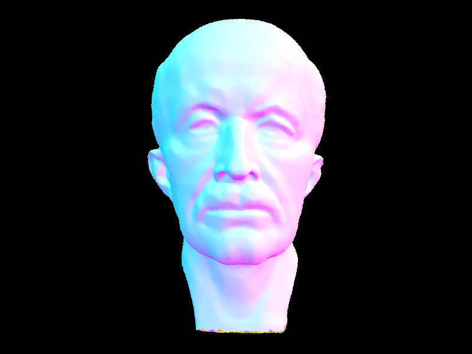 |
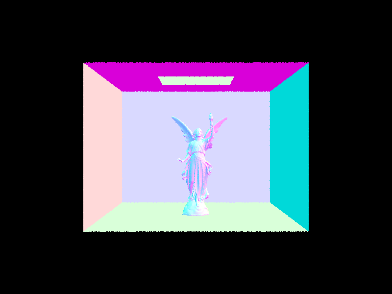 |
To evaluate the effectiveness of BVH acceleration, I compared rendering times on
two moderately complex scenes on the s330 machines. For Max Planck,
rendering without BVH took about 55 seconds, while rendering with BVH
took about 1.5 seconds. For CBlucy, rendering without BVH
took about 2 minutes, while rendering with BVH took about
2 seconds. These results show a dramatic speedup from BVH
acceleration: roughly 37× faster on Max Planck and about 60× faster on CBlucy.
The performance improvement is especially noticeable on scenes with many
triangles, where brute-force intersection becomes very expensive. Overall, the
BVH significantly reduces the number of primitive intersection tests per ray and
makes rendering complex geometry practical.
Part 3: Direct Illumination
Walk Through of Direct Lighting Implementations
Uniform Hemisphere Sampling (estimate_direct_lighting_hemisphere):
This method estimates direct lighting at a surface point by uniformly sampling directions over the
hemisphere centered around the surface normal. For each sample, we draw a random direction from a
uniform hemisphere distribution (pdf = 1/2π), transform it from object space to world space, and
cast a ray from the hit point in that direction. If the ray intersects an emissive object (a light
source), we evaluate the reflection equation: we multiply the incoming radiance from the light by
the BSDF evaluation (reflectance/π for diffuse surfaces) and the cosine of the angle between the
sampled direction and the surface normal, then divide by the pdf. We accumulate this over all samples
and normalize by the total number of samples to produce the final Monte Carlo estimate. This approach
is simple but inefficient because most sampled directions will not hit a light source, contributing
zero radiance and leading to high variance (noisy images).
Importance Sampling Lights (estimate_direct_lighting_importance):
This method improves on hemisphere sampling by sampling directions directly toward each light
source in the scene rather than sampling random directions. For each light, we take ns_area_light
samples (or just 1 for point/delta lights). Each sample uses light->sample_L() to get: the
incoming radiance, a direction toward the light, the distance to the light, and the sampling pdf. We first
check that the light is above the surface (the z-component of the direction in object space is positive).
Then we cast a shadow ray from the hit point toward the light with max_t = distToLight - EPS_F
to check for occluders. If unoccluded, we evaluate the reflection equation with the sampled radiance, BSDF,
cosine term, and pdf. We average the contributions per light and sum across all lights. Because every sample
is directed at a light, none are "wasted," producing much lower variance than hemisphere sampling for the
same number of samples.
Images Rendered with Both Implementations
The following images show CBbunny rendered with both direct lighting methods using 16 samples per pixel and 8 light rays:
Hemisphere Sampling (CBbunny, -s 16 -l 8 -H)
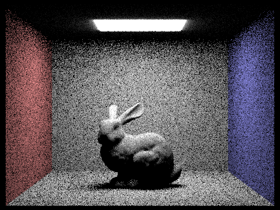
./pathtracer -t 8 -s 16 -l 8 -H -f CBbunny_H_16_8.png -r 480 360 ../dae/sky/CBbunny.dae
Importance Sampling (CBbunny, -s 16 -l 8)
./pathtracer -t 8 -s 16 -l 8 -f CBbunny_I_16_8.png -r 480 360 ../dae/sky/CBbunny.dae
Hemisphere Sampling (CBspheres, -s 16 -l 8 -H)
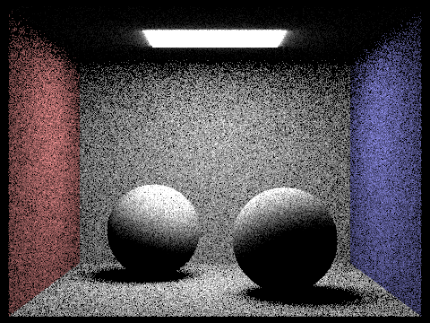
./pathtracer -t 8 -s 16 -l 8 -H -f CBspheres_H_16_8.png -r 480 360 ../dae/sky/CBspheres_lambertian.dae
Importance Sampling (CBspheres, -s 16 -l 8)
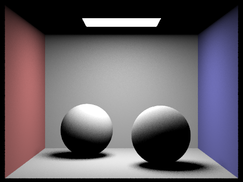
./pathtracer -t 8 -s 16 -l 8 -f CBspheres_I_16_8.png -r 480 360 ../dae/sky/CBspheres_lambertian.dae
Noise Levels in Soft Shadows (Light Sampling, varying -l)
The following images show CBbunny rendered with importance
sampling at 1 sample per pixel (-s 1) and varying
numbers of light rays (-l). Focus on the soft shadow
regions beneath the bunny and along the walls.
1 light ray (-l 1)
./pathtracer -t 8 -s 1 -l 1 -f CBbunny_l1.png -r 480 360 ../dae/sky/CBbunny.dae
4 light rays (-l 4)
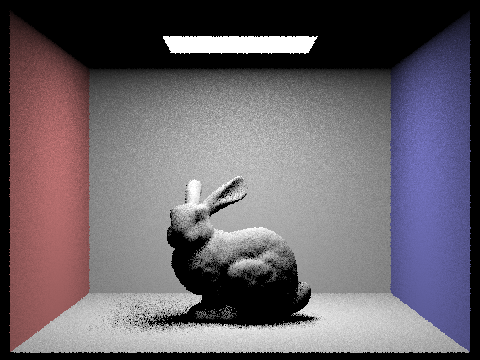
./pathtracer -t 8 -s 1 -l 4 -f CBbunny_l4.png -r 480 360 ../dae/sky/CBbunny.dae
16 light rays (-l 16)
./pathtracer -t 8 -s 1 -l 16 -f CBbunny_l16.png -r 480 360 ../dae/sky/CBbunny.dae
64 light rays (-l 64)
./pathtracer -t 8 -s 1 -l 64 -f CBbunny_l64.png -r 480 360 ../dae/sky/CBbunny.dae
As the number of light rays increases, the soft shadow regions become noticeably smoother.
With -l 1, the shadows are extremely noisy with harsh black-and-white speckles,
since each pixel only gets a single binary sample of whether it is in shadow or not. By -l 4,
the noise begins to reduce as the shadow estimate averages over a few samples. At -l 16,
the soft shadow transitions become much more coherent, and by -l 64, the shadows are nearly
smooth with only minor residual noise from having just 1 sample per pixel.
Comparison: Uniform Hemisphere Sampling vs. Importance Sampling
Uniform hemisphere sampling and importance sampling of lights produce the same converged result but differ
dramatically in noise at equal sample counts. With hemisphere sampling, most sampled rays miss the light
source entirely and contribute zero radiance, meaning only a small fraction of samples are informative. This
leads to very high variance and grainy images, especially in shadow regions and on surfaces far from the light.
Importance sampling, by contrast, directs every sample toward a light source, so every sample has the potential
to contribute meaningful radiance information. This results in significantly cleaner images with the same number
of total samples. The difference is most visible in soft shadow regions: hemisphere sampling produces noisy,
speckled shadows, while importance sampling renders smooth, well-defined penumbrae. Additionally, hemisphere
sampling cannot handle point light sources at all (the probability of a random ray hitting a point is zero),
whereas importance sampling handles them naturally. The trade-off is that importance sampling requires access
to a sample_L function for each light, but this is a minor implementation cost for a major quality
improvement.
Part 4: Global Illumination
The indirect lighting implementation exists in the at_least_one_bounce_radiance function. For each ray surface intersection, the function builds a local coordinate system from the surface normal to let lighting be computed in object space. It then computes the hit point and outgoing direction (w_out), and adds the direct lighting term from one_bounce_radiance. This gives the addition from light that reaches the surface in the first bounce. The calculations for higher order indirect illumination uses this structure recursively. To estimate the indirect light, I sampled a new incoming direction from BSDF using the sample_f function. This gave both w_in and the pdf. I used this to create a new ray from the hit point with an EPS_F offset. If/when the ray hits another surface, the function gets called recursively to estimate the radiance arriving at that point, using the BSDF value, cosine term, and inverse of the sampling pdf to weight the results. I also added Russian Roulette to this implementation to help (hopefully) terminate longer paths, using p=0.4. For surviving paths, I divided indirect estimated radiance by the pdf and my probability (0.4) to ensure the estimator remaind unbiased. The est_radiance_global_illumination function combined the emitted light and recursive many bounce estimate to compute the final global illumination results.
Global Illumination Renders
The following renders show full global illumination with both direct and indirect lighting enabled. All images in this section were rendered at 1024 samples per pixel.
Global illumination CBbunny with depth=5
./build/pathtracer -t 8 -s 1024 -l 16 -m 5 -r 480 360 -f CBbunny_1024_depth5.png ./dae/sky/CBbunny.dae
Global illumination CBspheres with depth=5
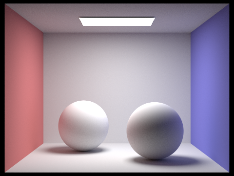
./build/pathtracer -t 8 -s 1024 -l 16 -m 5 -r 480 360 -f CBspheres_1024_depth5.png ./dae/sky/CBspheres_lambertian.dae
Global illumination bench with depth=5
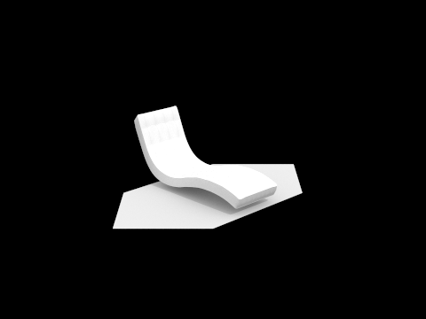
./build/pathtracer -t 8 -s 1024 -l 16 -m 5 -r 480 360 -f bench_1024_depth5.png ./dae/sky/bench.dae
Direct Lighting vs. Indirect Lighting Only
I used CBspheres_lambertian.dae to isolate the two components of global illumination.
The direct only render keeps the surfaces primarily lit by the visible light source, while the
indirect only renders bouncing lighting.
CBspheres with direct illumination only
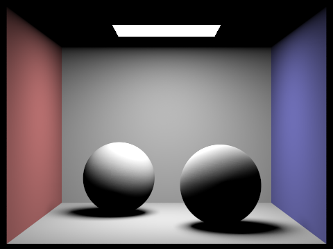
./build/pathtracer -t 8 -s 1024 -l 16 -m 5 -r 480 360 -f CBspheres_1024_direct_only.png ./dae/sky/CBspheres_lambertian.dae
CBspheres with indirect illumination only
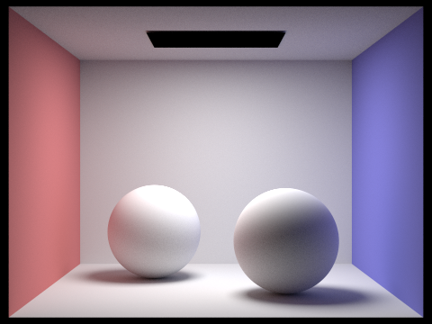
./build/pathtracer -t 8 -s 1024 -l 16 -m 5 -r 480 360 -f CBspheres_1024_indirect_only.png ./dae/sky/CBspheres_lambertian.dae
CBbunny Bounces with and without Accumulation
These images compare accumulated and unaccumulated bounce counts for CBbunny.dae.
With isAccumBounces=false, each render isolates only the mth bounce. With
isAccumBounces=true, each render includes all lighting contributions from bounce 0 up
through bounce m.
For the unaccumulated renders, the 2nd bounce is where indirect illumination first becomes very noticeable. Light reflected off the walls and floor begins to illuminate the bunny and nearby surfaces, so dark regions start to fill in and the first clear signs of color bleeding appear. In the 3rd bounce, that bounced light spreads farther through the Cornell box, making shadowed areas softer and the overall lighting feel more natural, even though the contribution is dimmer than the 2nd bounce.
Compared to rasterization, these higher order bounces are what make the rendered image look much more realistic. Rasterization usually captures only direct visibility and local shading, so surfaces can look flat and overly contrasty. The 2nd and 3rd bounces add interreflection between surfaces, which produces softer shading, subtle color transfer from the walls, and a stronger sense that all objects exist in the same lit environment. That extra global illumination is a major reason path traced images look more believable.
Comparing the accumulated and unaccumulated sequences, the accumulated renders look more complete
as m increases because each image includes all bounce contributions up to that depth. The
unaccumulated renders are dimmer and more selective, since each one isolates only a single bounce order.
This makes the accumulated series better for showing how the final image improves with more indirect light,
while the unaccumulated series is more useful for understanding what each individual bounce contributes.
Unaccumulated bounces CBbunny with m=0
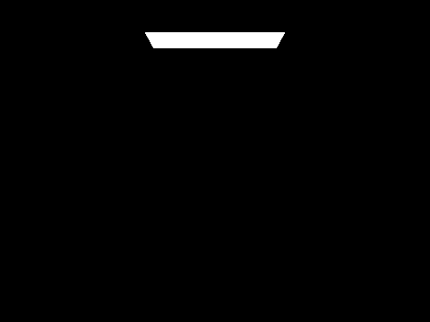
./build/pathtracer -t 8 -s 1024 -m 0 -o 0 -r 480 360 -f CBbunny_m0_unaccum_1024.png ./dae/sky/CBbunny.dae
Unaccumulated bounces CBbunny with m=1
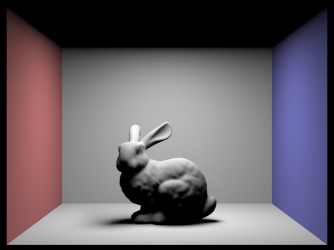
./build/pathtracer -t 8 -s 1024 -m 1 -o 0 -r 480 360 -f CBbunny_m1_unaccum_1024.png ./dae/sky/CBbunny.dae
Unaccumulated bounces CBbunny with m=2
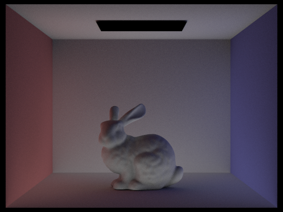
./build/pathtracer -t 8 -s 1024 -m 2 -o 0 -r 480 360 -f CBbunny_m2_unaccum_1024.png ./dae/sky/CBbunny.dae
Unaccumulated bounces CBbunny with m=3
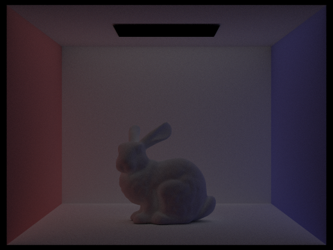
./build/pathtracer -t 8 -s 1024 -m 3 -o 0 -r 480 360 -f CBbunny_m3_unaccum_1024.png ./dae/sky/CBbunny.dae
Unaccumulated bounces CBbunny with m=4
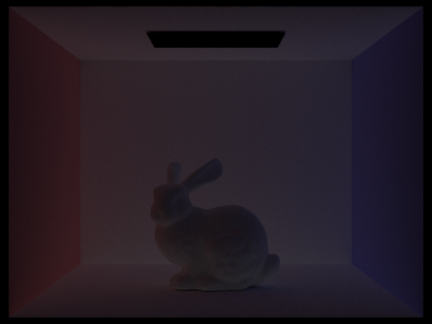
./build/pathtracer -t 8 -s 1024 -m 4 -o 0 -r 480 360 -f CBbunny_m4_unaccum_1024.png ./dae/sky/CBbunny.dae
Unaccumulated bounces CBbunny with m=5
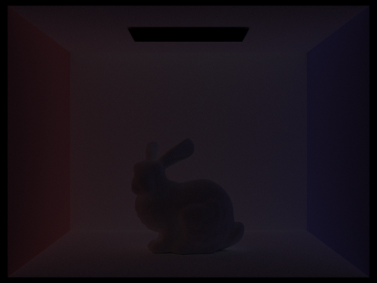
./build/pathtracer -t 8 -s 1024 -m 5 -o 0 -r 480 360 -f CBbunny_m5_unaccum_1024.png ./dae/sky/CBbunny.dae
Accumulated bounces CBbunny with m=0
./build/pathtracer -t 8 -s 1024 -m 0 -o 1 -r 480 360 -f CBbunny_m0_accum_1024.png ./dae/sky/CBbunny.dae
Accumulated bounces CBbunny with m=1
./build/pathtracer -t 8 -s 1024 -m 1 -o 1 -r 480 360 -f CBbunny_m1_accum_1024.png ./dae/sky/CBbunny.dae
Accumulated bounces CBbunny with m=2
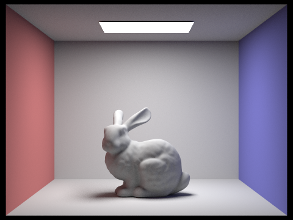
./build/pathtracer -t 8 -s 1024 -m 2 -o 1 -r 480 360 -f CBbunny_m2_accum_1024.png ./dae/sky/CBbunny.dae
Accumulated bounces CBbunny with m=3
./build/pathtracer -t 8 -s 1024 -m 3 -o 1 -r 480 360 -f CBbunny_m3_accum_1024.png ./dae/sky/CBbunny.dae
Accumulated bounces CBbunny with m=4
./build/pathtracer -t 8 -s 1024 -m 4 -o 1 -r 480 360 -f CBbunny_m4_accum_1024.png ./dae/sky/CBbunny.dae
Accumulated bounces CBbunny with m=5
./build/pathtracer -t 8 -s 1024 -m 5 -o 1 -r 480 360 -f CBbunny_m5_accum_1024.png ./dae/sky/CBbunny.dae
CBbunny Russian Roulette
These renders show Russian Roulette termination on CBbunny.dae with the same
1024-sample setup while varying max_ray_depth. The last image shows another depth=100 rendering
but with the russian roulette probability set to 10% to help more clearly visualize the effect.
CBbunny with p=0.3 and m=0
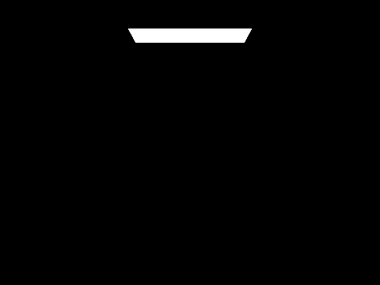
./build/pathtracer -t 8 -s 1024 -m 0 -r 480 360 -f CBbunny_rr30_m0_1024.png ./dae/sky/CBbunny.dae
CBbunny with p=0.3 and m=1
./build/pathtracer -t 8 -s 1024 -m 1 -r 480 360 -f CBbunny_rr30_m1_1024.png ./dae/sky/CBbunny.dae
CBbunny with p=0.3 and m=2
./build/pathtracer -t 8 -s 1024 -m 2 -r 480 360 -f CBbunny_rr30_m2_1024.png ./dae/sky/CBbunny.dae
CBbunny with p=0.3 and m=3
./build/pathtracer -t 8 -s 1024 -m 3 -r 480 360 -f CBbunny_rr30_m3_1024.png ./dae/sky/CBbunny.dae
CBbunny with p=0.3 and m=4
./build/pathtracer -t 8 -s 1024 -m 4 -r 480 360 -f CBbunny_rr30_m4_1024.png ./dae/sky/CBbunny.dae
CBbunny with p=0.3 and m=100
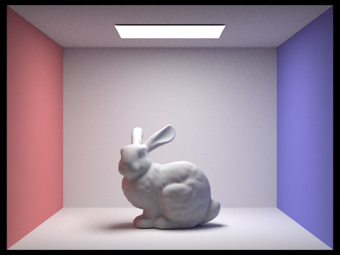
./build/pathtracer -t 8 -s 1024 -m 100 -r 480 360 -f CBbunny_rr30_m100_1024.png ./dae/sky/CBbunny.dae
CBbunny with p=0.1 and m=100
./build/pathtracer -t 8 -s 1024 -m 100 -r 480 360 -f CBbunny_rr10_m100_1024.png ./dae/sky/CBbunny.dae
CBspheres with Varied Sample per Pixel
The following images show CBspheres_lambertian.dae rendered with different camera sample
counts while keeping the number of light rays fixed at -l 4. At very low sample counts,
the image is dominated by Monte Carlo noise, especially in the shadowed regions and on the walls. As
s increases, that noise steadily averages out, and by s=1024 the image is much
cleaner and the indirect lighting is significantly more stable.
CBspheres with s=1 and l=4
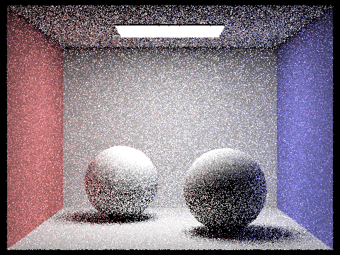
./build/pathtracer -t 8 -s 1 -l 4 -m 5 -r 480 360 -f CBspheres_s1_l4.png ./dae/sky/CBspheres_lambertian.dae
CBspheres with s=2 and l=4
./build/pathtracer -t 8 -s 2 -l 4 -m 5 -r 480 360 -f CBspheres_s2_l4.png ./dae/sky/CBspheres_lambertian.dae
CBspheres with s=4 and l=4
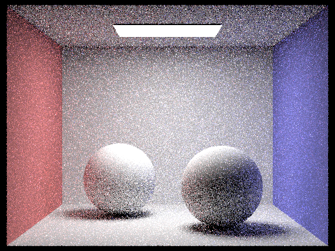
./build/pathtracer -t 8 -s 4 -l 4 -m 5 -r 480 360 -f CBspheres_s4_l4.png ./dae/sky/CBspheres_lambertian.dae
CBspheres with s=8 and l=4
./build/pathtracer -t 8 -s 8 -l 4 -m 5 -r 480 360 -f CBspheres_s8_l4.png ./dae/sky/CBspheres_lambertian.dae
CBspheres with s=16 and l=4
./build/pathtracer -t 8 -s 16 -l 4 -m 5 -r 480 360 -f CBspheres_s16_l4.png ./dae/sky/CBspheres_lambertian.dae
CBspheres with s=64 and l=4
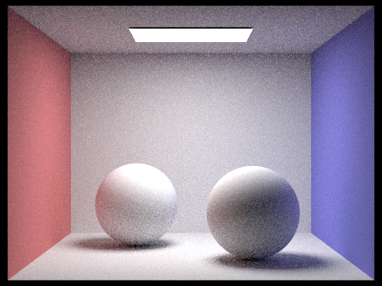
./build/pathtracer -t 8 -s 64 -l 4 -m 5 -r 480 360 -f CBspheres_s64_l4.png ./dae/sky/CBspheres_lambertian.dae
CBspheres with s=1024 and l=4
./build/pathtracer -t 8 -s 1024 -l 4 -m 5 -r 480 360 -f CBspheres_s1024_l4.png ./dae/sky/CBspheres_lambertian.dae
Part 5: Adaptive Sampling
Adaptive sample improves the rendering efficiency by varying the amount of sampling each pixel does. This reduced number of samples makes our algorithms do far less calculations, improving rendering times. It does this by monitoring how quickly each pixel converges, stopping sampling when the pixel appears to be stable. Pixels in low variance regions will typically only take a few samples, while pixels near edges (and similar high variance regions) will use far more samples. This makes it so we spend less compute on regions where the noise is easy to remove (like monotone walls), allowing us to render faster while still having a clear image.
My implementation uses raytrace_pixel to do the adaptive sampling. When each sample is traced, I monitor the radiance and illuminance, keeping track of s1 and s2 (as defined in the task). Then every samplesPerBatch samples, I compute the sample mean and estimate the variance. I use this to create a 95% confidence interval I (2 estimated sd above and below sample mean). Then if I is less than or equal to maxTolerance * sample mean, I assume the pixel has converged and stop tracing further rays for this pixel. If not, the loop continues. We do this until the pixel converges or reaches the maximum sample count.
Adaptive Sampling Results
For adaptive sampling, I rendered two scenes at a maximum of 2048 samples per pixel with
1 light sample and max_ray_depth = 5. The rendered result shows the final
noise-free image, while the sampling rate image visualizes where the renderer spent more work. Regions
with sharp shadow boundaries, geometric edges, and detailed indirect illumination stay warmer in the
rate map because they converge more slowly. Large smooth walls and other low-variance regions converge
earlier and therefore appear cooler.
CBbunny adaptive sampling 2048 samples
./build/pathtracer -t 8 -s 2048 -a 64 0.05 -l 1 -m 5 -r 480 360 -f CBbunny_adaptive_2048.png ./dae/sky/CBbunny.dae
CBbunny rate
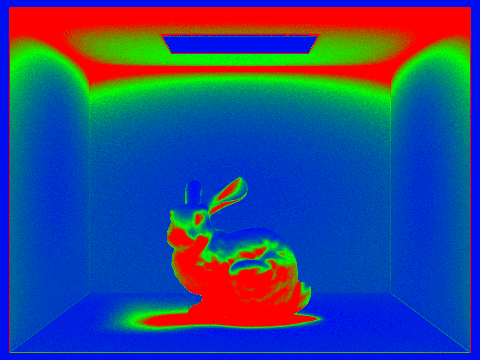
./build/pathtracer -t 8 -s 2048 -a 64 0.05 -l 1 -m 5 -r 480 360 -f CBbunny_adaptive_2048.png ./dae/sky/CBbunny.dae
CBspheres adaptive sampling 2048 samples
./build/pathtracer -t 8 -s 2048 -a 64 0.05 -l 1 -m 5 -r 480 360 -f CBspheres_adaptive_2048.png ./dae/sky/CBspheres_lambertian.dae
CBspheres rate
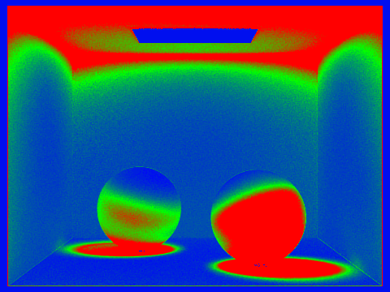
./build/pathtracer -t 8 -s 2048 -a 64 0.05 -l 1 -m 5 -r 480 360 -f CBspheres_adaptive_2048.png ./dae/sky/CBspheres_lambertian.dae
(Optional) Part 6: Extra Credit Opportunities
For the extra credit, I implemented a jittered pixel sampler. I did this by extending the Sampler2D
interface with a resettable sampling sequence and creating a function JitteredGridSampler2D in sampler.cpp.
This jittered sampler divides the unit square into a grid and generates a random sample inside
each grid cell. This helps preserve the randomness while allowing for better coverage since we are guaranteed
1 sample for every grid cell. I then updated the path tracer to use this sampler for camera rays and reset it
for every pixel so each pixel would get a unique sampling pattern.
Compared to the original random sampler, this jittered sampler produces more evenly distributed samples within each pixel, which reduces visible noise and aliasing when using low sample counts. The random sampler occasionally has gaps in objects or clumped pixels, making the noise appear blotchy and edges irregular. The jittered sampling spreads out the samples a bit more uniformly, giving the noise more stability and slightly sharper edges. This is mainly only an issue at low sample counts.
Below are the 2 sphere pictures rendered with a sample count of 4. and 2 spheres with sample count of 75. Both have 1 sphere rendered with my jittered random sapling and 1 with the original random sampling. Sample count = 4: The low sample count is used to exagerate the difference between the 2, which is much harder to see at higher counts as mentioned above. In the image using the original random sampler, it appears as if a small chunk is taken from the bottom right of the left sphere, which we can see more clearly in the image using the jittered sampler. Sample count = 75: This higher sample count allows us to see the difference in noise more clearly. By examining the textures of the walls and spheres', we can see that the unjittered sampling looks very noisy and we can easily spot clumps of 'noise' pixels together, giving it a more unnatural feeling. Contrastly, the picture with jittered sampling has a much smoother finish and is very hard to identify multiple 'noise' pixels in close proximity. It gives it a feel that the jittered sampling image was rendered using a higher sample count (though it wasn't), allowing us to achieve better performance without changing sample count.
Spheres with jittering and sample count = 4
Spheres without jittering and sample count = 4
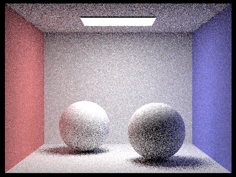
Spheres with jittering and sample count = 75
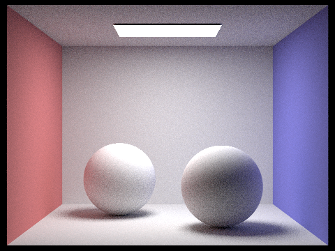
Spheres without jittering and sample count = 75